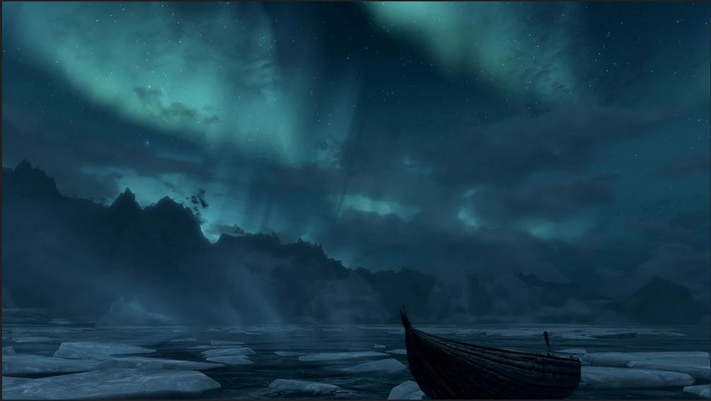
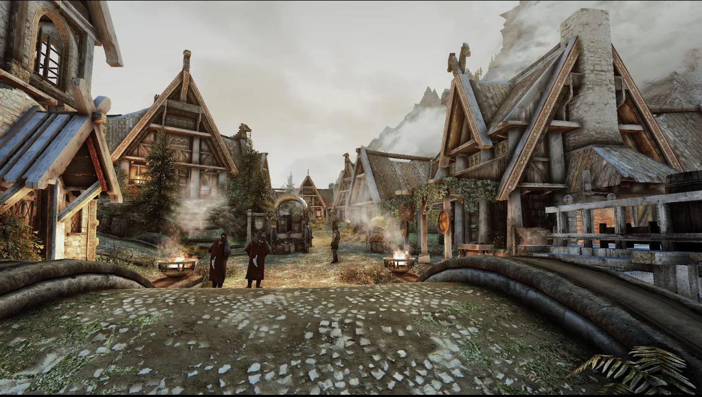
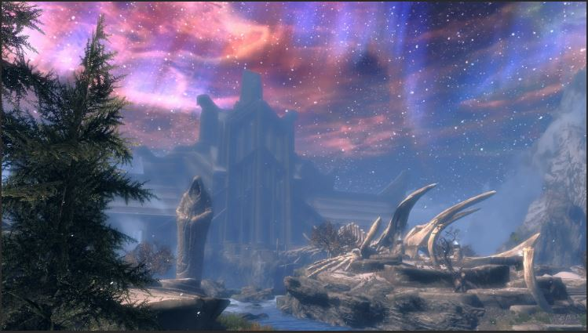

Мир SKYRIM

Провинция Скайрим находится на севере континента Тамриэль. Климат холодный. Рецензенты отмечают схожесть локаций Скайрима с пейзажами Скандинавии. Фауна представлена различными видами насекомых, птиц, саблезубыми тиграми, лосями, кроликами, волками, лисами, мамонтами, великанами, троллями, ледяными призраками, медведями и, что самое главное, драконами. Эта игра славиться своими живописными пейзажами, начиная от заснеженных вершин, заканчивая северными сияниями.
В водах живут грязевые крабы и рыбы-убийцы — традиционные монстры мира ТЕS, а также целый ряд новых видов рыб, ранее не появлявшихся в серии ТЕS. На территории королевства находятся девять городов — столиц владений: Солитьюд (Хаафингар), Рифтен (Рифт), Морфал (Хьялмарк), Данстар (Белый Берег), Виндхельм (Истмарк), Винтерхолд (Винтерхолд), Вайтран (Вайтран), Фолкрит (Фолкрит) и Маркарт (Предел). На территории провинции разбросаны входы в двемерские руины, три из которых — преддверия локации Чёрный предел. Все их особенности подчеркиваються определенным контрастном, некоторые из них выглядя угрюмо и холодно, благодоря снепжной погоде, а некоторые спокойно и развязно, благодоря туманам.
Также одним из мест действий является Совнгард — загробный мир нордов (аналог Вальгаллы из скандинавской мифологии), в который Довакин попадает, преследуя Алдуина.
